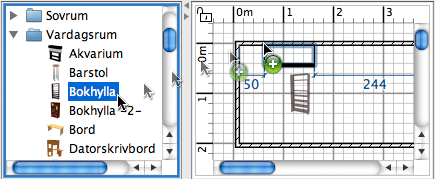

|
|
L�gga till d�rrar, f�nster och m�bler | ||
|
Dra och sl�pp en eller flera m�bler fr�n katalogen f�r att l�gga till dem i din planl�sning eller m�bellista.
 Du kan ocks� v�lja n�gra m�bler i katalogen och sedan v�lja M�bler > L�gg till i hemmet eller klicka p� L�gg till i hemmet-verktyget.
N�r m�bler sl�pps i m�bellistan eller l�ggs till med menyn
M�bler > L�gg till i hemmet �r det �vre v�nstra h�rnet p� punkten (0, 0). M�bler som l�ggs till i hemmet markeras och ritas upp i m�bellistan, i planl�sningen och i 3D-vyn samtidigt. Under tiden som 3D-modellen laddas kommer dessa m�bler visas som en vit ruta i 3D-vyn |
|